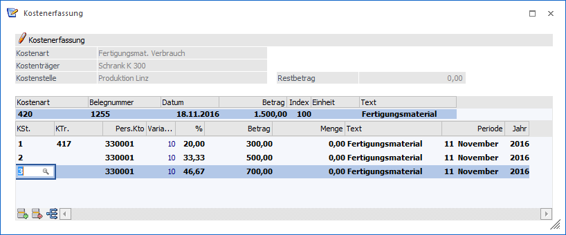
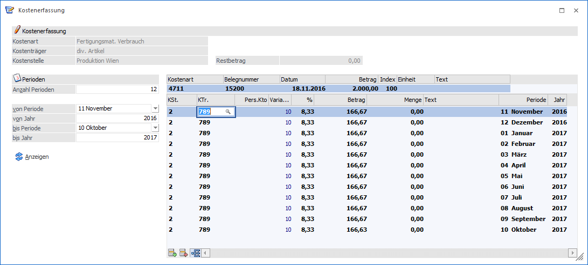

Die Datenfelder für die Erfassung der Kostenrechnungsinformationen sind fix vorgegeben (siehe Beschreibung unten).
Die Kostenerfassung wird über den Menüpunkt
1 Kosten
1 Kosten - Erfassung
oder Schnellaufruf
1 STRG + E
aufgerufen.

Ø Kostenart
Eingabe der Kostenart, max. 20stellig, alphanumerisch. Wird eine Einzelkostenart angewählt, kann in der darunterliegenden Aufteilungstabelle auch ein Kostenträger angesprochen werden. Bei Eingabe einer Gemeinkostenart bleibt das Aufteilungsfeld KTr. für die Aufteilung gesperrt. Außerdem wird geprüft, ob der Benutzer die Berechtigung hat (WinLine KORE/Stammdaten/Kostenart), die eingegebene Kostenart zu verwenden.
Ø Belegnummer
Belegnummer, max. 20stellig, alphanumerisch.
Ø Datum
Eingabe des Buchungsdatums.
Ø Betrag
Eingabe des Nettobetrages.
Ø Einheit
Ist bei der Kostenart eine Einheit hinterlegt, wird diese hier angezeigt.
Ø Text
Buchungstext, max. 100-stellig, alphanumerisch.
In der Tabelle können dann beliebig viele Aufteilungszeilen erfasst werden, die folgende Informationen beinhalten:
Ø KSt.
Eingabe der Kostenstellennummer, der der Betrag zugeordnet werden soll. Es wird geprüft, ob der Benutzer die Berechtigung hat (WinLine KORE/Stammdaten/Kostenstelle), die eingegebene Kostenstelle zu verwenden.
Ø KTr.
Eingabe der Kostenträgernummer (Achtung: nur bei Einzelkosten möglich). Es wird geprüft, ob der Benutzer die Berechtigung hat (WinLine KORE/Stammdaten/Kostenträger), den eingegebenen Kostenträger zu verwenden.
Ø Pers.Kto.
Eingabe eines Personenkontos. Es wird geprüft, ob das Personenkonto vorhanden ist und ob es gültig ist.
Ø Variator
Der Variator, der in der Kostenart für diese Kostenstellengruppe hinterlegt worden ist, wird automatisch aufgrund der aktuellen Kostenart vorgeschlagen, kann aber manuell übersteuert werden.
Ø %
Geben Sie ein, welcher Prozent-Anteil des im Feld Betrag eingetragenen Gesamtbetrages dieser Kostenstelle (diesem Kostenträger) zugeordnet werden soll. Das Feld kann auch einfach mit Enter übergangen werden, wenn Sie den Teilbetrag direkt im darauffolgenden Feld eintragen möchten.
Ø Betrag
Wenn im Feld % ein Prozentsatz eingegeben wurde, füllt das Programm das Betragsfeld automatisch mit dem errechneten Wert aus. Dieser Betrag kann auch manuell eingegeben werden. Durch Drücken der F3-Taste wird der noch nicht aufgeteilte Betrag automatisch übernommen.
Ø Menge
Eingabe der Anzahl der in der Kostenart hinterlegten Mengeneinheit.
Eine reine Mengenkorrektur oder nachträgliche Neuerfassung (z. B. Stundenerfassung) von Mengen ist ohne Betragseingabe (mit "Null") möglich.
Hinweis
Solange der Gesamtbetrag nicht zur Gänze aufgeteilt ist, kann die Aufteilung nicht (mit OK) abgespeichert werden (Meldung: Der Buchungsbetrag wurde nicht zur Gänze aufgeteilt). Im Feld Restbetrag wird der noch aufzuteilende Wert angezeigt.
Ø Text
Der Buchungstext wird aus dem "Kopfteil" in die weiteren Zeilen übernommen und kann pro Zeile editiert
bzw. individuell vergeben werden.
Ø Periode
Die Periode wird aus dem "Kopfteil" in die Zeilen übernommen und kann pro Zeile editiert werden, wenn z.B. auf mehrere Perioden aufgeteilt werden soll.
Ø Jahr
Das Jahr wird aus dem "Kopfteil" in die Zeilen übernommen und kann pro Zeile editiert werden, wenn z.B. auf mehrere Jahre aufgeteilt werden soll.
Buttons
Ø OK
Durch Drücken des OK-Buttons wird die Aufteilung abgespeichert.
Ø Ende
Mit dem Ende-Button wird das Aufteilungsfenster verlassen ohne dass die Beträge gespeichert oder gebucht wurden.
Ø Abbruch
Wenn Sie die Buchung abbrechen möchten, betätigen Sie den Abbruch-Button.
Ø Einfügen / Entfernen
Mittels dieser Buttons können neue Zeilen in die Tabelle eingefügt, bzw. bestehende entfernt werden.
Ø Aufteilen
Wird der Button ausgewählt, kann die KORE-Buchung auf mehrere Perioden aufgeteilt werden.

Es stehen zwei Möglichkeiten der Aufteilung zur Verfügung:
ü Es wird im Feld "Anzahl Perioden" die Anzahl der Perioden eingeben oder
ü Im Bereich von Periode/Jahr - bis Periode/Jahr wird der Aufteilungszeitraum eingegeben.
Mit dem Anzeigen-Button wird die Periodenaufteilung durchgeführt.
Hinweis:
Diese Aufteilung kann auch manuell bearbeitet werden. Werden Beträge geändert, rechnet die WinLine den aufzuteilenden Restbetrag unterhalb der Tabelle mit. Mit F3 wird im aktuellen Betragsfeld der Restbetrag zum Betrag hinzugefügt. Unterhalb der Tabelle stehen auch die Einfügen-/Entfernen-Button zur Verfügung.
Hinweis:
Eine Aufteilung bezieht sich immer auf die aktuelle Zeile.
Eine vorherige Aufteilung hat keinen Zusammenhang und muss manuell entfernt werden.
Tabellenbuttons
Ø Ausgabe Excel
Durch Anwahl des Buttons "Ausgabe Excel" wird der Inhalt der Tabelle nach Microsoft Excel übergeben.
Ø Tabelleneinstellungen speichern
Die Spalten einer Tabelle können grundsätzlich an beliebige Positionen verschoben, bzw. in der Breite entsprechend angepasst werden. Durch Anwahl des Buttons "Tabelleneinstellungen speichern" werden die Einstellungen benutzerspezifisch gespeichert und bei dem nächsten Aufruf des Programmpunktes wieder vorgeschlagen.
Ø Gesamteinstellungen speichern
Im Gegensatz zu "Tabelleneinstellungen speichern" können mit "Gesamteinstellungen speichern" mehrere Tabellenaufbauten gespeichert und nach Wunsch geladen werden. Zusätzlich werden Sonderfunktionen der Tabelle (z.B. "Spalte gruppieren") ebenfalls bei der Speicherung bedacht.